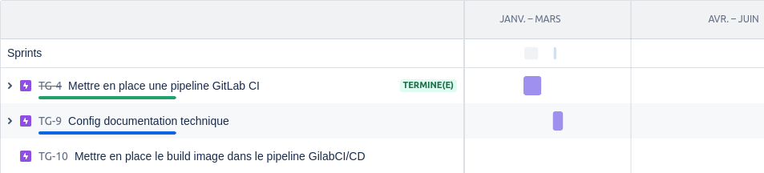

3. Solution Technique¶
3.1. Schémas de conception technique¶
A partir du modèle de domaine et des users stories détaillés dans le chapitre précédent, vous trouverez ci dessous :
un diagramme de classe en UML qui permettra de comprendre le fonctionnementde l’application et d’adopter un langage omniprésent de l’application.
le schéma d’architecture de l’application pour identifier les relations entre les différentes couches de cette dernière.
3.2. Glossaire¶
Afin d’avoir une vision plus explicite de l’application, vous trouverez ci dessous son diagramme de classe
Diagramme de classe¶
{kind=link}
3.3. Spécifications techniques¶
3.3.1 Choix de l’architecture¶
Cette application se repose sur une architecture 3 tiers pour exposer un REST API. Elle utilise, entre autre, le langage Java, le framework SpringBoot, ainsi que Gradle pour gérer au mieux ses dépendances.
De par son architecture, elle permettra donc:
De communiquer plus facilement avec une future implémentation d’un front-end et celà grâce à l’exposition de son REST API.
D’obtenir rapidement des informations par le biais de requêtes sur des API distantes.
D’être déployer aisément et de fonctionner de manière autonome.
Note
Il est tout de même important de préciser, qu’actuellement, cette version d’application ne comporte pas de base de donnée (celle ci est « mockée » grâce à l’utilisation d’une HashMap internalUserMap) et, en ce qui concerne l’appel a des API distantes, ce comportement est remplacé par l’utilisation de librairies embarquées dans l’application : GpsUtils, RewardsCentral et TripPricer.L’appel à leur methodes simule une requête avec un temps de réponse plus ou moins long…
Ci dessous un schéma de l’architecture permettant de mettre en avant le fonctionnement des différentes couches:
{kind=link}
3.3.2 Frameworks et dépendances utilisés¶
Ci dessous, la listes des dépendances de l’application avec leur version:
SpringBoot 2.7.12
Java 8
Actuator 2.7.12
Gradle 7.2
JavaMoney 1.3
Google Gson 2.8.9
ModelMapper 3.1.1
Google-java-format 1.17.0
Junit-jupiter-api 5.9.3
Awaitility 4.2.0
Hamcrest 2.1
Mockito 4.5.1
Json-path 2.7.0
Assertj-core 3.22.0
Jacoco 0.8.4
Log4j2
3.4. Calendrier prévisionnel et exigences¶
Toutes les améliorations et résolution de bug ont été planifiés et gérés avec l’outil Jira en utilisant la méthodologie agile. Chaque users story et évolution est liée étroitement à une branche et l’ensemble du projet a été traité avec l’outil de versioning GitFlow.
Vous trouverez ci dessous le lien vers la feuille de route du projet, vous permettant de voir chaque sprint réalisé et les futures exigences:
